Documentation
For KeyMelier – see the latest release. Screenshots use fictional demo data.
The sidebar has three global areas – Backup & loss, Accounts and Settings (app settings for this computer) – and below them your keys. The tab bar of a key shows the everyday areas directly – Overview, PIN, Passkeys, Fingerprints, Authenticator, History, Key check. OpenPGP, PIV, OTP, the key settings and the technical details are in the Advanced menu at its end (also by keyboard: arrow keys, Esc). Areas a key does not support are not shown.
Install & first launch
Download the disk image (macOS) or the installer (Windows) from the latest release – the buttons on the home page link to them directly. Each release lists SHA-256 checksums – compare them if in doubt.
macOS
- Open
KeyMelier-macOS.dmgand drag KeyMelier onto Applications. To update, do the same and choose Replace. - Current releases are not yet notarized: on first launch macOS says it cannot verify the app. Click Done, then open System Settings → Privacy & Security and click Open Anyway.
- For the OTP slots, macOS asks for the Input Monitoring permission (see OTP slots).
Windows
- Run
KeyMelier-Windows-Setup.exe. It installs KeyMelier (Start menu entry, uninstaller) or updates an existing installation. - If SmartScreen appears: More info → Run anyway (releases are not yet code-signed).
- KeyMelier asks for administrator rights when it starts – Windows only lets administrators talk to FIDO keys directly.
Without installer: the …-macOS.zip and …-Windows.zip files contain the same apps.
Updates
When a new version is published, a notice appears in the sidebar. Download update fetches the disk image or installer for your system into Downloads, checks it against the SHA-256 checksum published with the release and opens it. You install it yourself: on macOS quit KeyMelier and drag the new version to Applications, on Windows follow the installer. KeyMelier never installs anything on its own. To check yourself, click the version at the bottom of the sidebar (Check for updates), or use KeyMelier → Check for Updates… in the macOS menu or the menu bar icon.
Plug in a key – it appears in the sidebar within a second. KeyMelier follows your system language (11 languages) and light/dark mode; the language can be changed at the bottom left.
Overview & checks
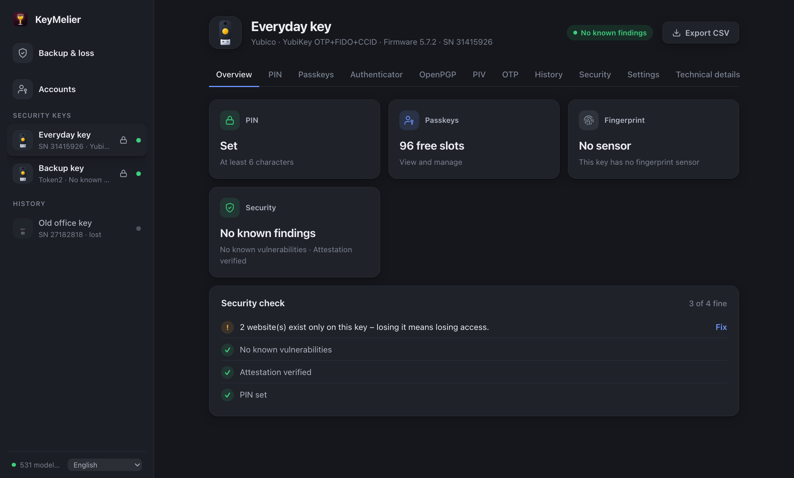
The sidebar lists connected keys and, below, keys seen before – with the serial number that is usually printed or engraved on the key (hover for the full line). Read key (next to the key's name, or the small lock in the sidebar) unlocks it with the PIN and reads everything on it at once – passkeys, authenticator, OpenPGP, certificates; older keys without a passkey list are searched instead. KeyMelier never tries a PIN on its own. ⋯ holds further actions such as the CSV export.
Two statements are kept apart on purpose: the key check is about the device (authenticity, vulnerabilities, PIN), account coverage is about the accounts that depend on this key (only on this key, unclear, …). A technically flawless key can still have accounts without a backup. The overview leads with what is on the key – passkeys, authenticator accounts and open tasks; areas that were not read say "Not read" rather than showing an empty count. Below, the checks list what to improve; Fix jumps to the right place.
The key check status means:
- No known findings – a certified model, authenticity verified, current metadata and vulnerability data, nothing found.
- Warning / Critical – a known vulnerability, a revoked or compromised model, or a failed authenticity test.
- Unknown – something needed for a verdict is missing (e.g. the authenticity test was not completed, or offline without current data).
Security & authenticity
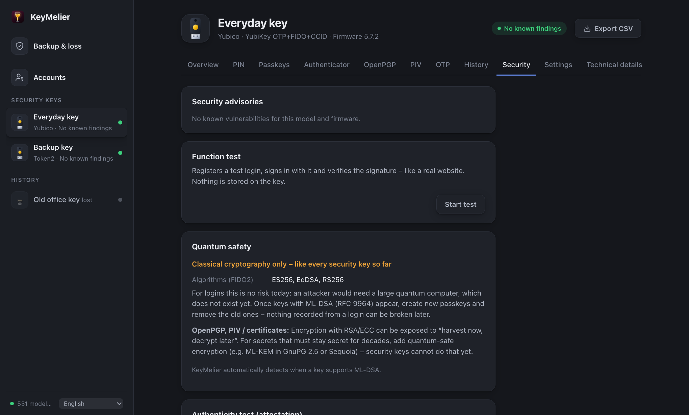
- Security advisories: known vulnerabilities for this model and firmware, from KeyMelier's signed database, which updates itself.
- Function test: registers a test login, signs in and verifies the signature like a real website – nothing is stored on the key.
- Quantum safety: which signature algorithms the key offers; post-quantum ML-DSA is detected automatically once keys support it.
- Authenticity test (attestation): when a key is plugged in, KeyMelier asks it to prove it is the model it claims to be. Touch the key when it blinks. Keys with a PIN may ask for it – enter it here to run the test.
- FIDO metadata: certification level and status from the FIDO Alliance.
- Data freshness: when the vulnerability database and FIDO metadata were last updated, with Check now and the open-source licenses.
PIN
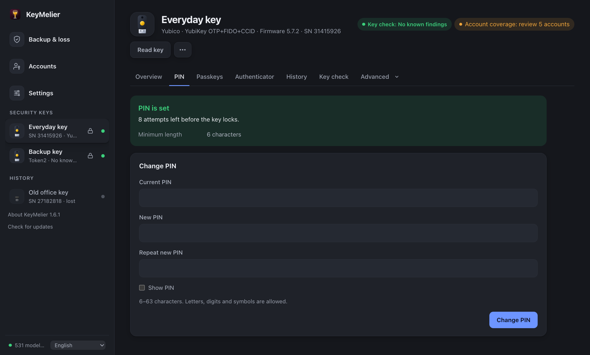
Set or change the FIDO2 PIN and see the remaining attempts. After 8 wrong PINs the FIDO application locks and only a reset helps. Some keys require a PIN change on first use (e.g. keys delivered with a start PIN) – KeyMelier guides you through it.
Passkeys
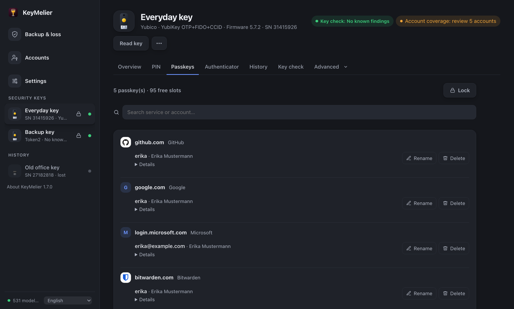
Unlock with the PIN (or fingerprint) to list the passkeys stored on the key, grouped by website – search by website or account; Details shows the protection level and credential id. Rename or delete them (deleting asks again). Deleting a passkey here does not remove it from the website – remove it there too. The unlock is held in memory for a few minutes only.
Classic two-factor registrations (U2F) are not stored on the key and therefore do not appear in this list.
Key settings & reset
In Advanced → Key settings.
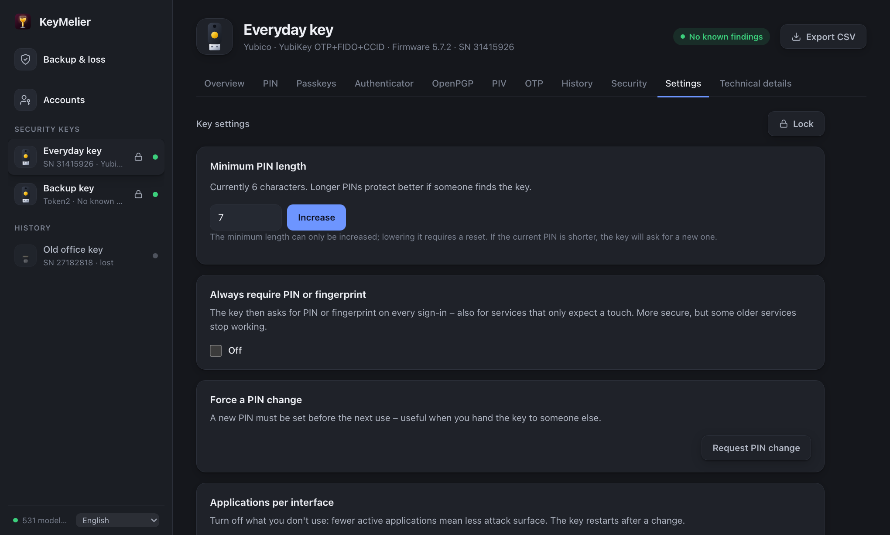
- Key settings: minimum PIN length, always require PIN or fingerprint, force a PIN change.
- Applications per interface (YubiKey): turn off what you don't use over USB or NFC. FIDO2 over USB always stays on so KeyMelier can find the key.
- Factory reset of the FIDO application: KeyMelier asks you to re-plug the key and touch it. All passkeys and fingerprints are deleted; authenticator, OpenPGP and PIV are not affected.
Authenticator (TOTP/HOTP)
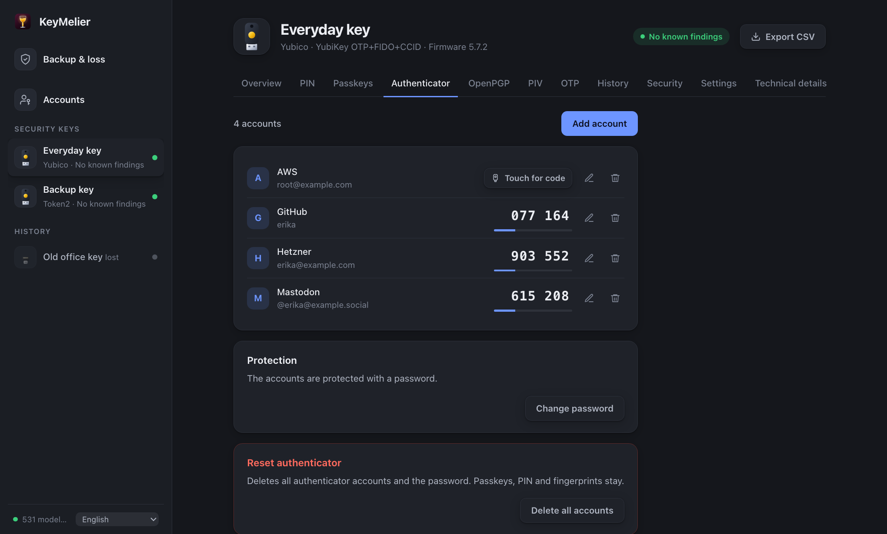
Two-factor codes stored on the key (compatible with Yubico Authenticator). Click a code to copy it. Accounts marked for touch show their code after you touch the key.
- Add account: paste the
otpauth://link from the website's QR code, or enter issuer, account and secret by hand. - Protection: set a password so the codes cannot be read by anyone who plugs in the key. KeyMelier never stores the password.
OpenPGP
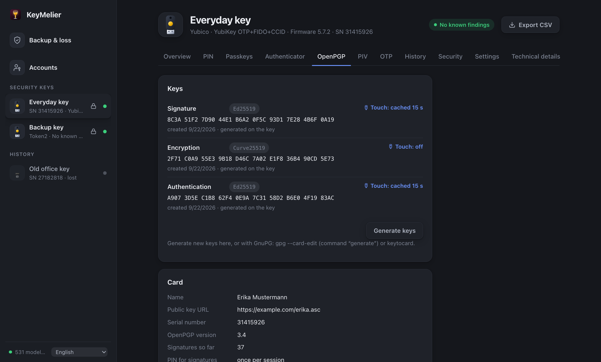
Shows the signature, encryption and authentication keys on the card with fingerprint, algorithm and creation date, plus the signature counter, cardholder data and the PIN/admin PIN attempts. You can change or unblock PINs, choose whether every signature asks for the PIN, set touch policies (YubiKey) and reset OpenPGP.
Generate keys on the card
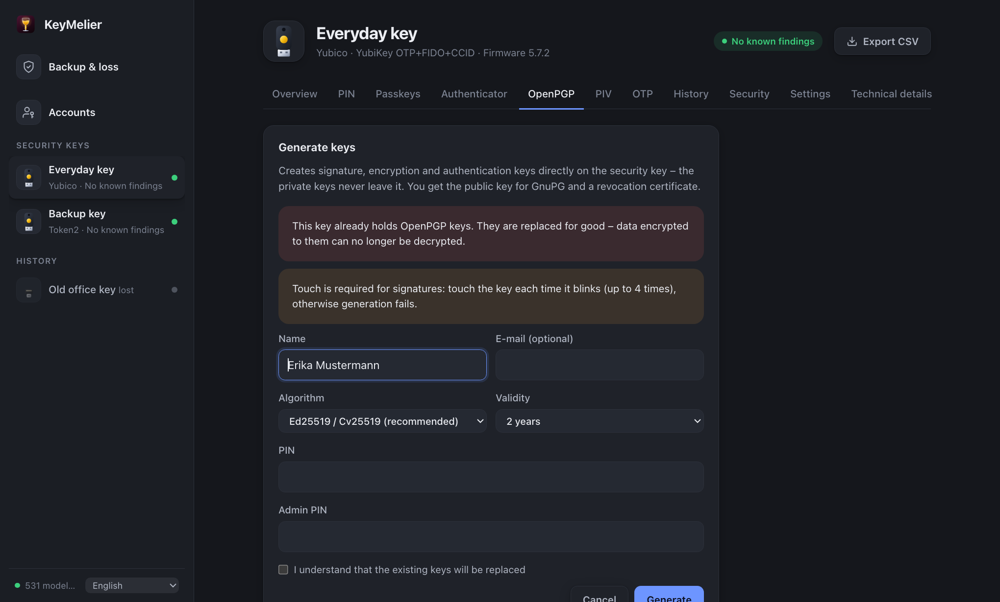
Choose name, e-mail, algorithm (Ed25519/Cv25519 recommended) and validity, enter the PIN and admin PIN. The private keys are created on the key and never leave it. Afterwards:
- Save the revocation certificate somewhere safe – you need it if the key is lost.
- Save or copy the public key, or import it into GnuPG directly (if installed). Then
gpg --card-statuslinks it to the key.
Factory PINs: user PIN 123456, admin PIN 12345678 – change both.
PIV certificates
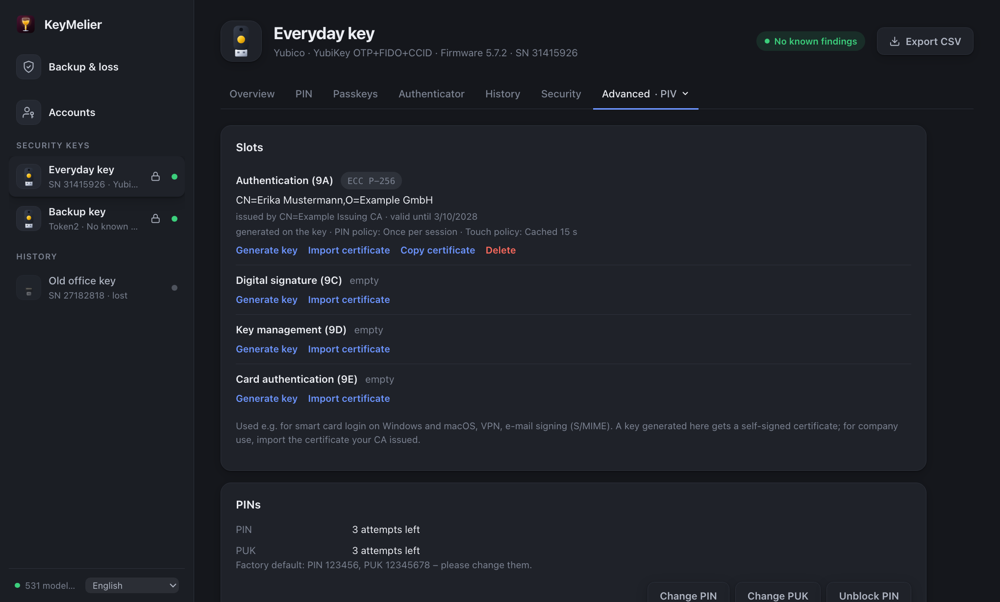
PIV is used for smart card login on Windows and macOS, VPNs and e-mail signing. KeyMelier shows each slot's certificate with validity and warns about expiring certificates and factory defaults.
- Generate key: a new key pair on the key with a self-signed certificate; for company use import the certificate issued by your CA.
- Import / copy / delete certificates, change PIN and PUK, unblock the PIN.
- Protect with PIN: replaces the factory management key with a random one unlocked by your PIN.
OTP slots (YubiKey)
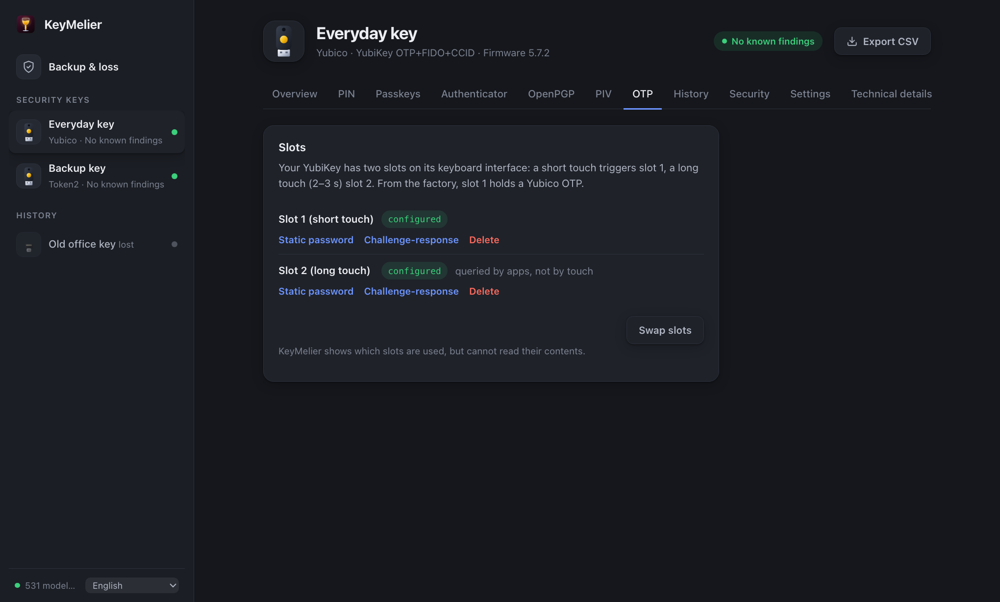
A short touch triggers slot 1, a long touch slot 2. KeyMelier shows which slots are used and can program a static password or HMAC-SHA1 challenge-response (e.g. for KeePassXC – save the secret shown once to set up a backup key), swap or delete slots.
macOS: the OTP slots use the key's keyboard interface. Allow KeyMelier under System Settings → Privacy & Security → Input Monitoring, then restart KeyMelier.
History
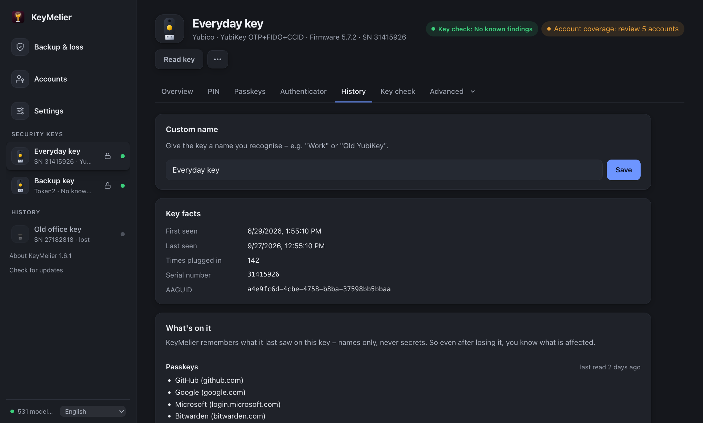
Every key KeyMelier has seen stays in the sidebar with its last known state. Give it a name, see serial number, AAGUID and an activity timeline – and what's on it: passkey websites, authenticator accounts, OpenPGP keys, certificates and OTP slots, with the time they were last read. Only names are stored, never secrets or codes.
Account overview
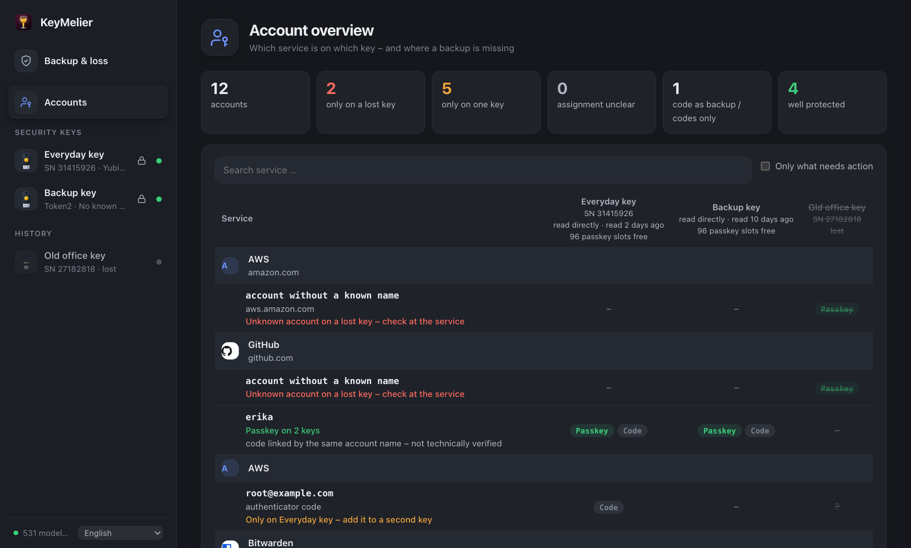
Accounts (top of the sidebar) lists every account across all your keys – passkeys and authenticator codes – grouped by service, with a rating for each: only on a lost key, only on one key (add it to a second one), passkey plus code on another key, codes only, account unclear, or passkey on several keys. The summary cards show the totals and work as filters (also by keyboard), together with the search; Reset filter shows everything again. The legend above the table explains the cells; header row and account column stay visible while you scroll. For problem accounts, Next step explains what to do at the service – KeyMelier cannot copy or register anything there by itself. The column headers show how many passkey slots each key has left and when it was last read.
The rating is deliberately strict. An account counts as the same only with the same website ID (rpId) and the same account name – two accounts at the same service (e.g. two Microsoft UPNs) are rated separately, and a similar-looking domain is never merged. Passkeys whose account name is unknown (older keys without the PIN) are shown as "account unclear" and are never counted as anyone's backup. A code is linked to a passkey only by an identical account name and marked as such. Keys marked as lost never count as protection.
Every cell says where the information comes from – read from the key, found by search (older keys) or imported – and when. A key that was never read shows ? ("not known") instead of "not there". For older keys that can only be searched, "not there" is shown only for a website the search actually asked and the key answered "no credentials" – websites not asked, errors and incomplete answers stay ?. Display names (e.g. "Administrator") are shown but never used to match accounts. Information older than 90 days is marked as stale.
The overview assumes that all keys belong to you. If you manage keys for several people, turn off All keys belong to me under Settings: the overview, the backup tables and the "backup on" hints are then hidden, because one person's key is not another person's backup.
KeyMelier only knows what it has read: open Passkeys and Authenticator once per key. Classic U2F registrations are not stored on the key and cannot appear. A passkey on a key is not proof that signing in at the service works.
Backup & lost keys
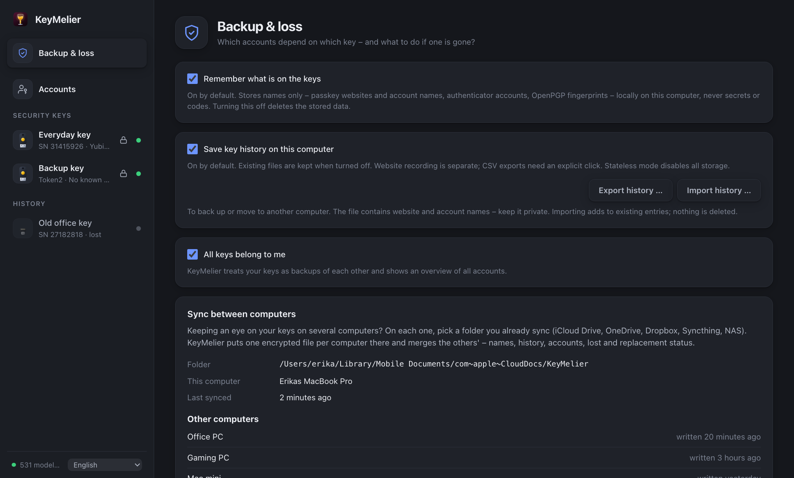
Backup & loss (top of the sidebar) shows the three things to act on, in this order: how well your accounts are covered (Review accounts opens the account overview; the cards open it filtered), Lost a key? and Replace an old key. A line at the bottom shows the sync status.
App settings
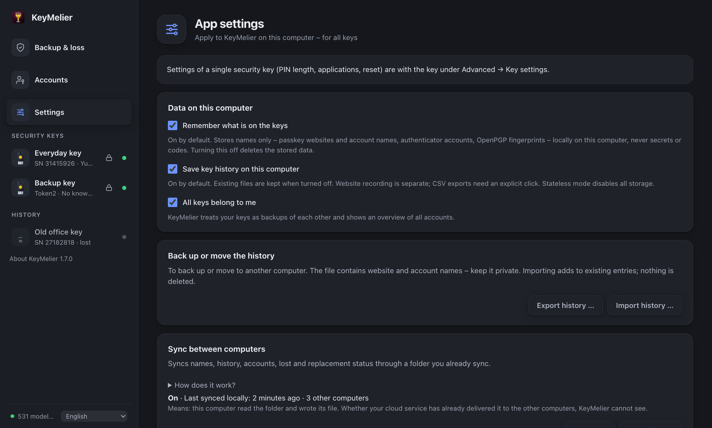
Settings in the sidebar apply to KeyMelier on this computer, for all keys: remembering what is on the keys, saving the history, "All keys belong to me", export or import of the history, and sync between computers. The settings of one key (PIN length, applications per interface, reset) are with that key under Advanced → Key settings.
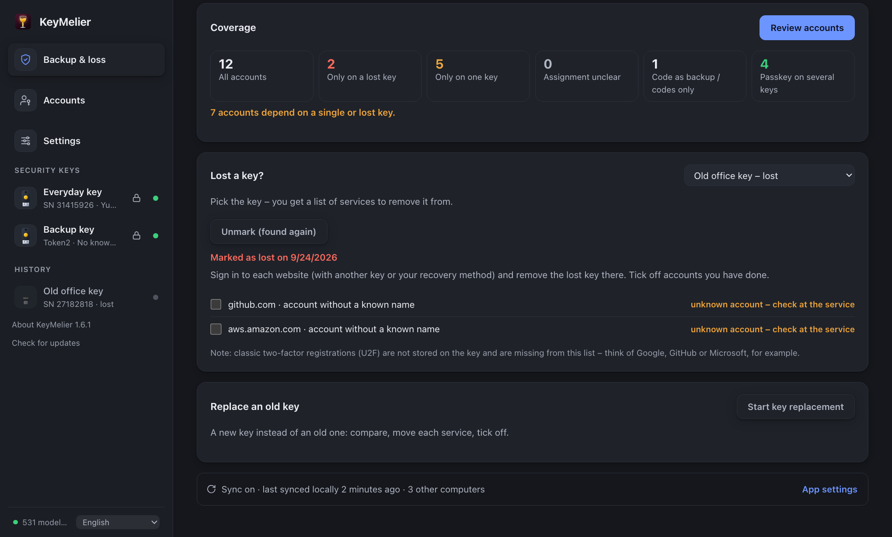
If a key is lost, pick it in Lost a key? and mark it as lost. You get a checklist: websites to remove the key from (with the keys that still work there), authenticator accounts to set up again, OpenPGP keys to revoke and certificates to have revoked.
Replacing a key
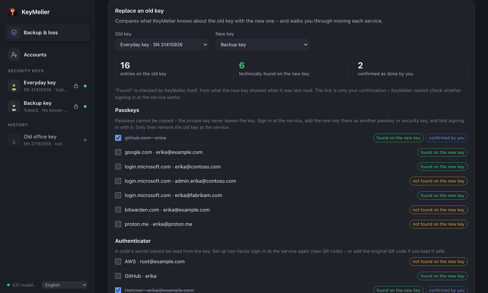
Replace an old key (under Backup & loss) opens a guided view in four steps: 1 choose the old and the new key (with serial numbers), 2 compare, 3 sign in at each service with the new key and confirm, 4 see what is still open. Open entries only hides what is done. Each passkey, authenticator account, OpenPGP key, certificate and OTP slot of the old key carries two separate marks:
- Found on the new key – checked by KeyMelier from what the new key showed when it was last read (same website and account name, same authenticator account, same OpenPGP fingerprint). A certificate with the same name or a used OTP slot is only "similar" – not proof of the same key. "New key not read yet" means: plug it in and open the areas once.
- Confirmed by you – your own tick when you have finished a service. KeyMelier cannot check whether signing in works, and a tick never replaces the technical check: a ticked entry that was not found on the new key stays open and is marked "not technically verified".
Private keys cannot be copied from one security key to another: register the new key at each service, set up authenticator accounts again (or from a QR code you kept), load OpenPGP keys only from your own backup or create new ones, and have certificates reissued. Progress is saved with the history; with history off it lasts until KeyMelier quits, and with "remember contents" off there is nothing to compare. KeyMelier never resets or deletes anything on either key – remove the old key at every service first, then reset it yourself.
Sync between computers
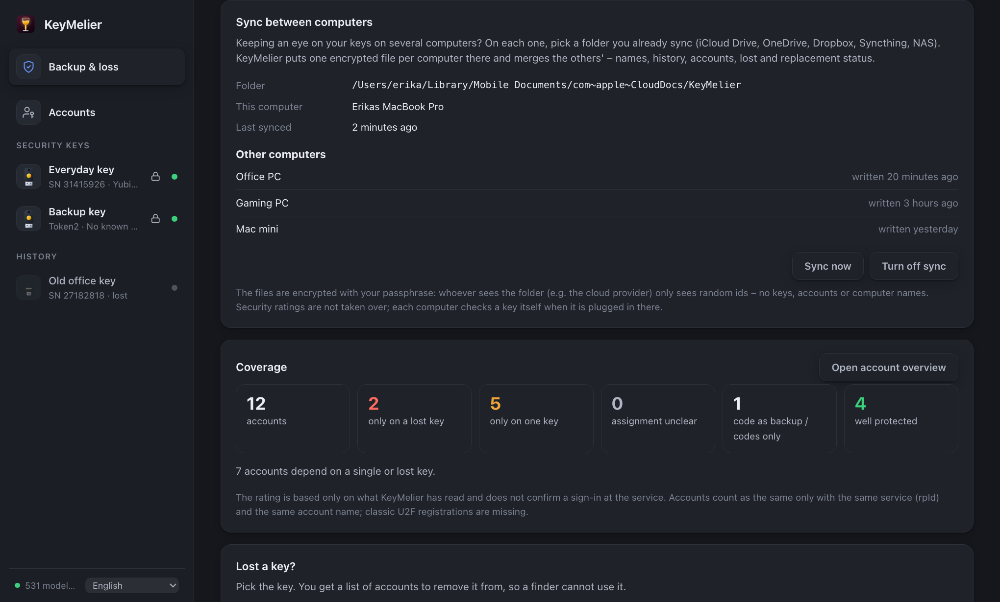
Using KeyMelier on several computers? Under Settings → Sync between computers, pick a folder that you already sync – iCloud Drive, OneDrive, Dropbox, Syncthing or a NAS share – and set a passphrase. Do the same on every computer with the same passphrase. KeyMelier writes one file per computer into that folder and merges the files of the others every half minute ("last synced locally" means this computer read the folder and wrote its file – not that your cloud service has already delivered it everywhere): key names, history, what is on each key, lost and replacement status. The newest decision wins, including "no longer lost" and "removed from history".
Every computer only writes its own file and replaces it in one step, so two computers never write the same file. A file that is still arriving through the cloud is simply read again at the next check; an error is shown only if it stays unreadable.
The files are encrypted with your passphrase (scrypt, AES-256-GCM). Whoever can see the folder only sees random ids. The passphrase is kept in the macOS Keychain or Windows Credential Manager and cannot be recovered. Security ratings are never synced – each computer checks a key when it is plugged in there. Sync needs the saved history and is off in stateless mode.
Data, updates & privacy
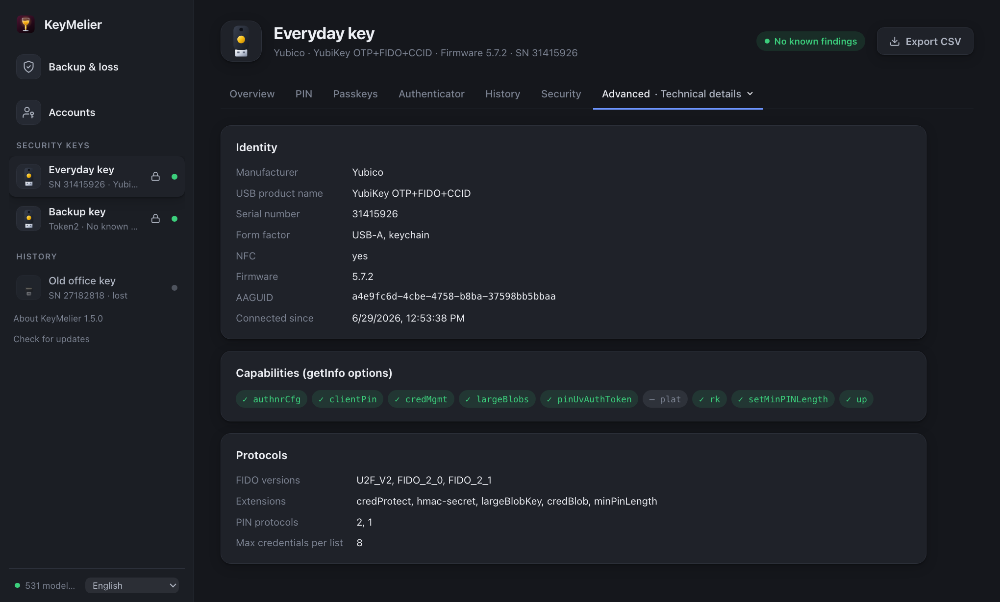
KeyMelier does not send any information about you or your keys. It downloads FIDO Alliance metadata (verified against the FIDO root and revocation lists), its own signed vulnerability database and the latest release number for an update notice. The data freshness is shown at the bottom of the Security tab; Check now updates immediately.
Stored locally in your home folder (keymelier): settings and the history. Start with --stateless to store nothing. The open-source licenses of all components are one click away next to it (Open-source licenses).
About KeyMelier
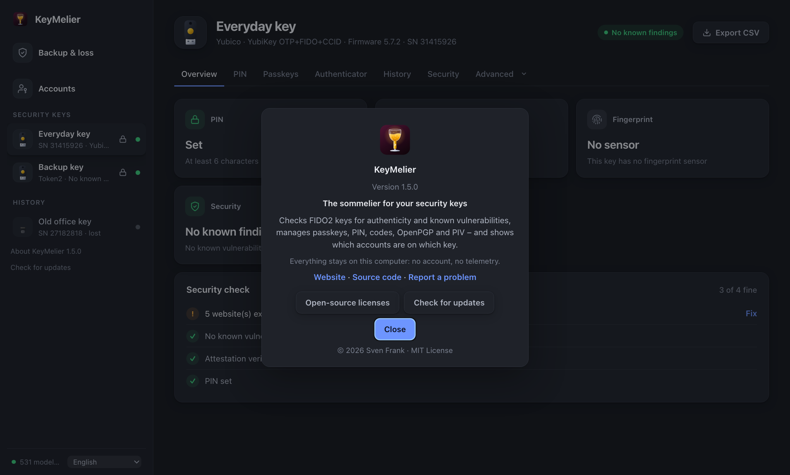
Click About KeyMelier at the bottom of the sidebar (on macOS also in the KeyMelier menu) for the version, links to the website, source code and issue tracker, the open-source licenses and Check for updates.
Troubleshooting
- Key not detected on Windows: run KeyMelier as administrator.
- "The smart card interface is used by another program": usually GnuPG. Run
gpgconf --kill scdaemonand try again. - Authenticator/OpenPGP/PIV missing (OpenPGP and PIV are in the Advanced menu): the key has no smart card interface, it is disabled under Advanced → Key settings, or several keys of the same model are connected – plug in only one.
- Authenticity test "not performed": touch the key when it blinks right after plugging it in, or run the test again in the Key check tab (with PIN if asked).
- OTP slots cannot be read on macOS: grant Input Monitoring (see OTP slots).
- Anything else: open an issue.